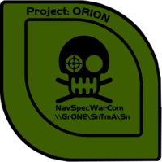

코버넌트와의 전쟁이 발발하기 전인 2491년에, UNSC 특수부대와 관련된 '오리온 프로젝트'의 일부로 실시된 최초의 스파르탄 프로젝트. UNSC군내 지원자들을 뽑아 개조 수술을 통한 신체 강화를 계획했으나, 이미 성장이 끝난 성인들에게 개조 수술을 해봤자 비효율적이라, 2번의 시도 끝에 중지. 큰 활약은 하지 못했지만, 후에 실시될 스파르탄 프로젝트 개선에 큰 기여를 하였다.